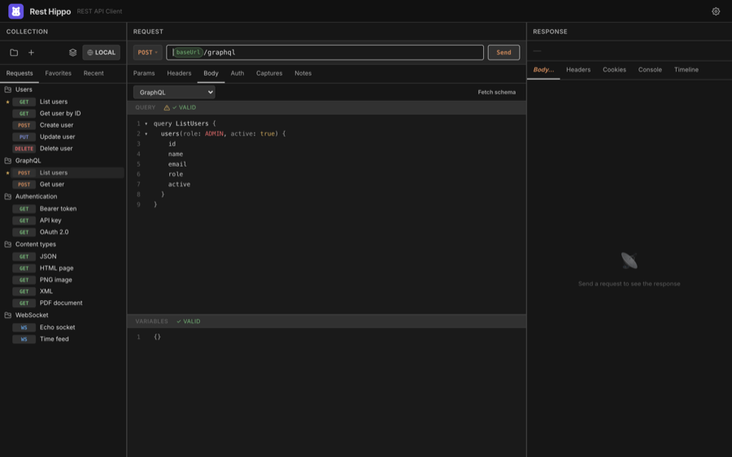
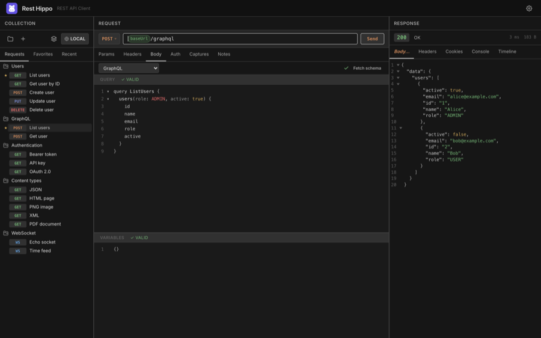
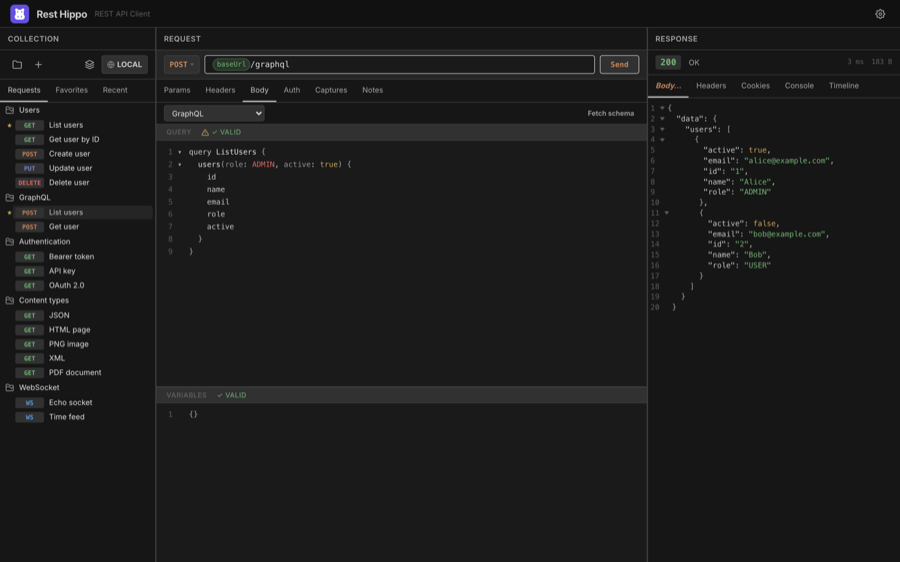

GraphQL
Rest Hippo has a first-class GraphQL editor. Set a request's method to POST,
point the URL at your GraphQL endpoint, and choose GraphQL as the
body type.
The query editor
The Body tab splits into two panes: the Query editor and a Variables editor for the operation's JSON variables.

- Both panes are syntax-highlighted with line numbers and code folding.
- The Query pane shows a ✓ VALID / ✗ badge for syntax (and, once a schema is fetched, for validity against the schema).
- The Variables pane validates that your variables are well-formed JSON.
- The split orientation follows the app layout: side-by-side panes in wide layouts, stacked panes in tall ones. Drag the divider to resize.
You can use {{variables}} in the query and
variables, the same as any other body.
Fetching the schema
Click Fetch schema to run a GraphQL introspection query against the request's URL. Once the schema loads, Rest Hippo uses it for two things:

- Autocomplete — typing in the Query pane suggests fields, arguments, types, and enum values from your schema.
- Validation — the ✓ VALID badge now reflects whether your query is valid against the schema, not just syntactically.
After a schema is loaded, the status badge shows how many types are available.
Right-click the badge to View Schema (a read-only, syntax-highlighted
view of the SDL) or Download Schema to save it as a .graphql file.
Sending and reading the result
Click Send to run the operation. The response comes back like any other — pretty-printed and syntax-highlighted in the response viewer:

GraphQL servers return 200 OK even for query errors, so check the response
body's errors array, not just the status code.
Next: WebSockets →